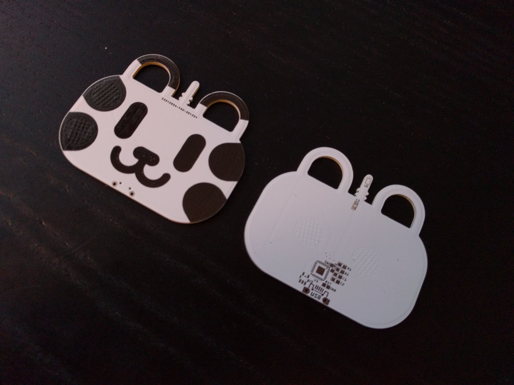
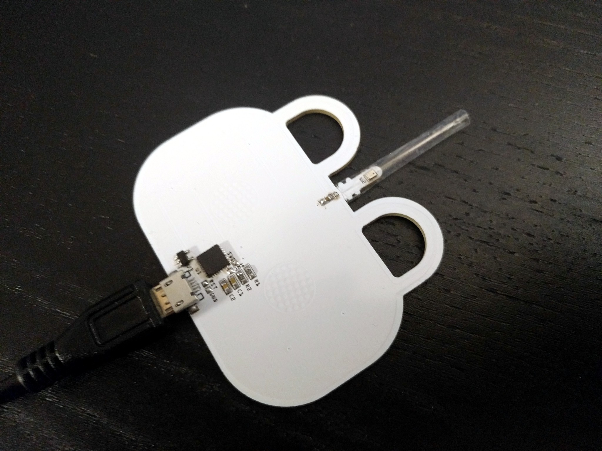

First Prototype Problems¶
Published on 2021-01-05 in Electronic 6-hole Ocarina.
The PCBs arrived from @JLCPCB today.
Assembling one and flashing CircuitPython on it only took a moment, but I had to wait until the evening with programming it.
I wrote this simple test program that just displays the state of the “holes” and the pressure sensor reading on the USB serial:
import board
import time
import struct
import busio
import touchio
class BMP280:
_buffer = bytearray(3)
def __init__(self, i2c, address=0x76):
self._i2c = i2c
self._address = address
self._buffer[0] = 0xf4 # ctrl_meas
self._buffer[1] = 0b001_001_11
self._i2c.try_lock()
self._i2c.writeto(self._address, self._buffer, end=2)
def get_pressure(self):
self._buffer[0] = 0xf7
self._i2c.writeto_then_readfrom(self._address,
self._buffer, self._buffer,
out_end=1, in_end=2)
return struct.unpack_from('>H', self._buffer)[0]
holes = tuple(touchio.TouchIn(pin)
for pin in (
board.AREF, board.A0,
board.A4, board.A6,
board.A3, board.A1
)
)
i2c = busio.I2C(scl=board.D6, sda=board.MOSI)
sensor = BMP280(i2c)
base = sensor.get_pressure()
time.sleep(0.1)
base = sensor.get_pressure()
while True:
print(sensor.get_pressure() - base)
mask = 0
for hole in holes:
mask = (mask << 1) | hole.value
print(bin(mask))
time.sleep(0.1)
It’s very simple, but it already allowed me to see two potential problems.
First of all, I put traces to the two left-hand “holes” close to the left bottom “hole”, which means that you will sometimes touch those traces by mistake, and it’s enough to trigger it. The next version will have those traces on the other side of the board, safely shielded with a generous ground fill. Easy.
Second, my initial tests with the sensor were very brief, and I actually converted the value I was reading from the registers wrong, so I didn’t notice that the sensor actually “swings back” after I blow into it, and takes a good minute to stabilize back to the ambient pressure. That is a considerable problem if we want to be able to play faster than one note a minute.
For now I’m planning to make it trigger by observing the first derivative — the change in value, if you will — instead of the absolute value read from the sensor. This also solves the problem of the drift that the sensor has, and the challenge of being able to play while riding an elevator. It will complicate the code somewhat, unfortunately. If I can’t get it to work, I will probably switch to a microphone.